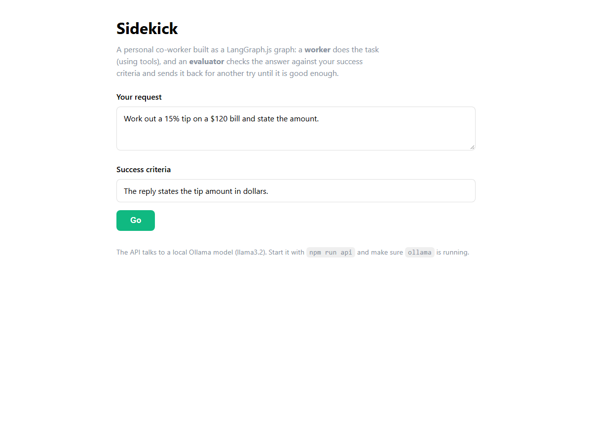

Week 4 · Project Build — the Sidekick, Step by Step
Build the Sidekick from an empty folder in two stacks: Python with uv (LangGraph + Playwright + Gradio), and a React + Node + TypeScript app with a Hono API over LangGraph.js.
Build it yourself · Python + uv and React + Node + TypeScriptThis is the Week 4 project: the Sidekick — a personal assistant agent built as a LangGraph graph. You give it a request and a line of success criteria. A worker node does the work and may call tools (a browser, web search, files, a code runner); an evaluator node then judges the worker's answer against your criteria and either accepts it or sends it back with feedback. The graph loops until the criteria are met or the Sidekick needs to ask you a question. That worker/evaluator loop, wired with conditional edges and remembered across turns by a checkpointer, is the whole Week 4 build.
We build the same project twice, in two stacks:
- Track A — Python + uv: the original course build, on LangGraph with Playwright browser tools and a Gradio chat window.
- Track B — React + Node + TypeScript: the same graph ported to LangGraph.js, served by a small Hono API and driven by a React chat page.
Both stacks share the same core idea: a typed state graph with three nodes — worker, tools and evaluator. The worker is bound to the tools and decides whether to call one; a router sends the graph to the tools and back, or on to the evaluator; the evaluator returns structured output (met / not met / needs user) that routes the graph to the end or back to the worker. A checkpointer keyed by a thread id gives each session its own memory.
Build it step by step
A runnable version of this week lives in week4-py/. It runs with no paid keys by pointing LangChain's ChatOpenAI at a local Ollama server (http://localhost:11434/v1, model llama3.2), so you can watch the graph wiring, the tool loop and the memory run end to end:
# 1. Install Ollama from https://ollama.com, then pull the model it uses
ollama pull llama3.2
# 2. Install dependencies (UV_NATIVE_TLS=1 avoids corporate TLS errors)
cd week4-py
UV_NATIVE_TLS=1 uv sync
# 3. Run the examples (one at a time - they share the single Ollama queue)
uv run python src/lab2_chatbot.py # a StateGraph chatbot (add_messages reducer)
uv run python src/lab3_tools_memory.py # tools + conditional edges + MemorySaver memory
CHECKPOINTER=sqlite uv run python src/lab3_tools_memory.py # same, but memory saved to a SQLite file
uv run python src/sidekick.py # the slimmed worker/evaluator loopWhat was verified locally against Ollama: the StateGraph compiling and invoking, the ToolNode plus tools_condition loop (the calculator tool was actually called and returned 437), memory across turns on one thread_id and isolation between threads (both MemorySaver and the SQLite SqliteSaver), and the Sidekick's structured-output worker/evaluator routing to the end when the criteria were met. What was shown as in the course but not run here: the Playwright browser tools, Serper web search and Pushover push notifications (they need a real browser or API keys), and the paid OpenAI models and LangSmith tracing — the slimmed sidekick.py swaps the browser tools for a safe local calculator and run_python, and keeps the Playwright wiring in a commented block so you can see exactly where it goes.
New to the worker/evaluator loop? What it is and why it matters
A plain agent answers once and stops. A worker/evaluator pair adds a second agent whose only job is to grade the first one's answer against the success criteria you gave. If the answer passes, the graph ends. If it fails, the evaluator's feedback is fed back to the worker and it tries again. This is the same "evaluator-optimiser" idea from Week 1, now expressed as a graph: the two nodes and the conditional edges between them are the loop, so LangGraph handles the looping, the memory and the tool calls for you.
Track A - Python + uv (LangGraph + Playwright + Gradio)
- Scaffold the project. Either start fresh with
uv init sidekick, or clone the course repo and open its4_langgraphfolder.uvcreates the project and manages a local.venvfor you. - Add the dependencies:
uv add langgraph langchain-openai langchain-community langgraph-checkpoint-sqlite pydantic python-dotenv, and the browser extrauv add playwright nest-asynciothenplaywright install chromium.langgraphbuilds the graph,langchain-openaiis the chat client,langchain-communitycarries the Playwright and search toolkits, andlanggraph-checkpoint-sqlitegives the file-backed memory. - Create a
.envfile with your keys (never commit it). The course uses hosted OpenAI; to run free you can instead pointChatOpenAIat Ollama:OPENAI_API_KEY=sk-... SERPER_API_KEY=your-serper-key PUSHOVER_TOKEN=your-pushover-app-token PUSHOVER_USER=your-pushover-user-key # or, to run locally with no keys: OPENAI_BASE_URL=http://localhost:11434/v1 MODEL=llama3.2load_dotenv(override=True)reads this file at the top of the script. - Define the graph state and the evaluator's output type. In
sidekick.py, aStateTypedDictholdsmessages(annotated with the add_messages reducer),success_criteria,feedback_on_work,success_criteria_metanduser_input_needed. AnEvaluatorOutputPydantic model declares the three fields the evaluator must return:feedback,success_criteria_metanduser_input_needed. - Write the worker node. It builds a system message from the success criteria (plus any previous feedback), binds the tools to the model with
make_llm().bind_tools(self.tools), and returns the model's reply. Aworker_routerthen checks the reply: if it contains tool calls, route to thetoolsnode; otherwise route to theevaluator. - Write the evaluator node. A second model configured with
with_structured_output(EvaluatorOutput)reads the conversation and the criteria and returns the typed verdict. Aroute_based_on_evaluationfunction sends the graph toENDwhen the criteria are met or user input is needed, and back toworkerotherwise. - Wire and compile the graph. On a
StateGraph(State), add the three nodes (worker, a prebuiltToolNode(tools=self.tools), andevaluator), the edgeSTART → worker, the two conditional edges (workerandevaluator), and the plain edgetools → worker. Compile withcheckpointer=MemorySaver()so the graph remembers each thread. - Add the real tool set in
sidekick_tools.py: the Playwright browser toolkit (create_async_playwright_browser+PlayWrightBrowserToolkit), Serper web search, aFileManagementToolkitin a sandbox folder, a Python REPL, Wikipedia, and a Pushover push tool. (The runnableweek4-py/swaps the browser/search/push for a safecalculatorandrun_pythonso it needs no browser or keys.) - Wrap it in Gradio in
app.py: build a freshSidekickgraph and a newthread_idper browser session so users never share memory, then agr.Blockschat that passes the message and the success-criteria box intograph.invoke(...)and streams the worker's answer and the evaluator's feedback back.
The full, verified code for the worker, the evaluator, the graph builder and the tools is embedded line by line on the Day 4 and Day 5 pages — build those first; this page is the map that joins them into one project.
app.py is the UI and the per-session glue, sidekick.py is the graph, and sidekick_tools.py is the tool set. The Track B files (server/index.ts, sidekick.ts, sidekick-tools.ts) map one to one onto these.Track B - React + Node + TypeScript
Track B is the real week4-ts/ project. The same worker/evaluator graph moves to the official @langchain/langgraph (LangGraph.js) SDK, but a browser cannot hold the API key, so the graph runs on a tiny server and the React page talks to it over HTTP.
- Scaffold a React + TypeScript app with Vite, then make the folder an npm project with ES modules:
npm create vite@latest week4-ts -- --template react-ts cd week4-ts npm init -y # then set "type": "module" in package.json - Add the dependencies with npm:
npm add @langchain/langgraph @langchain/core @langchain/openai hono @hono/node-server zod dotenv, and the dev toolsnpm add -D tsx typescript vite @vitejs/plugin-react react react-dom @types/node @types/react @types/react-dom.@langchain/langgraphis the graph SDK,zoddescribes the evaluator's structured output, andhono+@hono/node-serverare the server. - Create
src/model.ts— amakeLlm()that returns aChatOpenAIpointed at the Ollama base URL, so every script and the server share one model definition. - Create
src/sidekick-tools.ts— the tools module. It exports asidekickTools()builder returning acalculator, aweb_search(a real Serper call whenSERPER_API_KEYis set, otherwise a clearly-labelled stub), sandboxedwrite_file/read_file/list_files, arun_javascriptrunner (standing in for the course's Python REPL), and asend_push_notificationstub. Each tool is atool(...)with azodschema, mirroring the Python toolkit. - Create
src/sidekick.ts— the graph builder as aSidekickclass. AStateAnnotationdeclares the same state (messages withmessagesStateReducer, plus the bookkeeping fields), azodEvaluatorOutputdeclares the verdict, andbuildGraph()adds theworker, aToolNode, and theevaluatorwith the same edges, compiled with aMemorySaver. Each instance gets its ownidwhich doubles as thethread_id, so every session has its own memory. - Add the CLI entry,
src/run.ts. It creates aSidekick, callssetup()thenrun(message, successCriteria), and prints the answer and the verdict — this isnpm run sidekick -- "your request" "your success criteria". - Create
server/index.ts— a Hono app with one route,POST /api/sidekick. It reads{ message, successCriteria }, builds a freshSidekickper request (its own tools and memory thread, mirroring "a fresh graph per session"), runs one pass, and returns the result as JSON. It also serves the built React app fromweb/dist. - Build the React chat in
web/src/App.tsxand run it. Thepackage.jsonalready defines the scripts:
Start the API with"scripts": { "day1": "tsx src/day1.ts", "day2": "tsx src/day2.ts", "day3": "tsx src/day3.ts", "day4": "tsx src/day4.ts", "sidekick": "tsx src/run.ts", "api": "tsx server/index.ts", "web": "vite --config web/vite.config.ts", "typecheck": "tsc --noEmit -p tsconfig.json", "build": "tsc --noEmit -p tsconfig.json && vite build --config web/vite.config.ts" }npm run api(Hono on port 8787) and the dev front end withnpm run web(Vite on 5173, proxying/api). Open the Vite URL and chat.
New to Hono? What it is and why it matters
Hono is a very small, fast web framework for JavaScript servers. Here it does one job: expose a single POST /api/sidekick endpoint that the React page can call. Keeping the LangGraph graph on the server means your secret key never ships to the browser — the browser only ever sends a request and a line of success criteria, and receives the finished answer and the evaluator's verdict.
With the API and web dev server both running, the finished page looks like this:

web/src/App.tsx), served through the Hono API. You enter a request and a line of success criteria, and the page shows the worker's answer and the evaluator's verdict.- The Sidekick: a worker/evaluator agent built as a LangGraph graph that works on a task until your success criteria are met or it needs to ask you a question.
- A typed state, a
workernode bound to tools, a prebuiltToolNode, and anevaluatornode with structured output, joined by conditional edges into a loop. - Per-session memory from a checkpointer keyed by a
thread_id— a fresh graph and thread for every user. - Track A in Python + uv on LangGraph, with Playwright browser tools and a Gradio chat window.
- Track B in React + Node + TypeScript (
week4-ts/): the same graph on LangGraph.js, a HonoPOST /api/sidekickroute, and a React chat page inweb/src/App.tsx. - A free local version lives in
week4-py/; full line-by-line code is on the Day 4 and Day 5 pages.